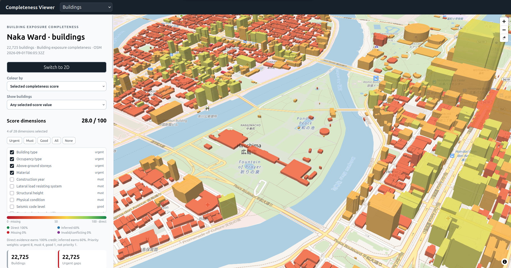
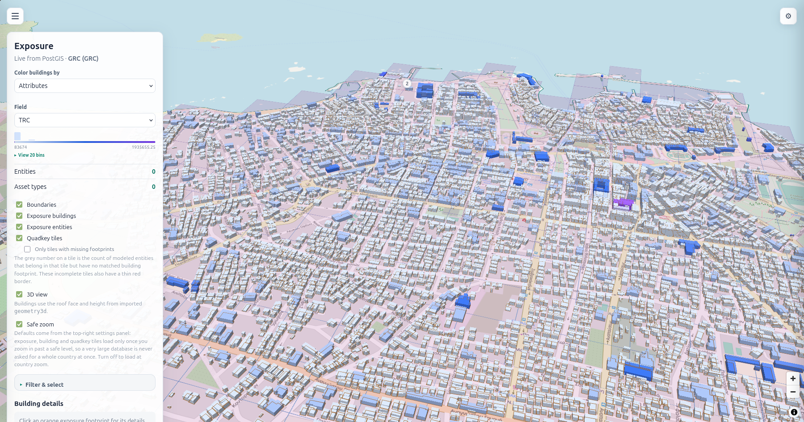
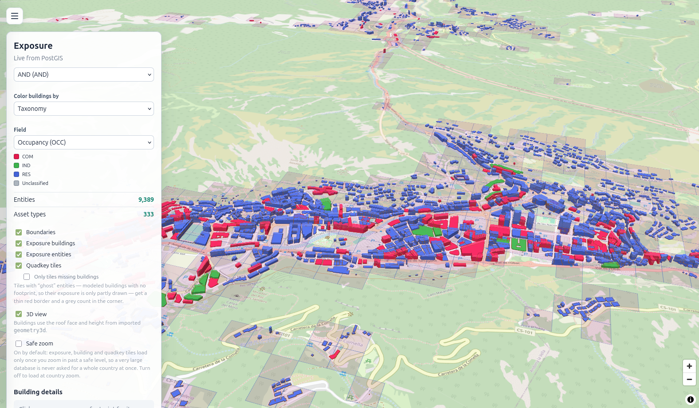

The data behind the model.
A shared taxonomy, aggregate estimates, and building-level data. Together they connect the model across scales.

OXM Taxonomy
A shared vocabulary for material, structure, height, and occupancy, so different sources can be combined. Built on the GEM taxonomy; extracted evidence is aligned to it before it enters the model.

OXM Aggregate Model
Estimates of building counts, structural value, and occupancy for an area. It starts from a PAGER/WHE baseline and HAZUS-based costs, adds population, employment, and built-up area, and is calibrated with regional evidence.

OXM Building-Level Model
2D and 3D building data, combined. Rule-based processing gives each building geometry, use, construction, and estimated exposure attributes, and reprocesses them as OpenStreetMap changes.
Tools that use the data.
OXM Web, the QGIS Building Plugin, and OXM Loss Calculator. All open source.